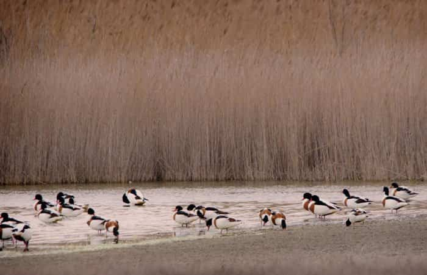

Lagunas de Lillo: Un Santuario Natural en La Mancha
Las Lagunas de Lillo son una de las áreas naturales más importantes de Castilla-La Mancha. Declaradas Reserva Natural, su valor ecológico es incalculable, siendo un lugar esencial para la vida de las aves acuáticas migratorias.
Características Ecológicas
El complejo lagunar está formado por varias lagunas de origen endorreico, con diferente grado de salinidad. Es un punto clave en la ruta migratoria de las aves, especialmente durante el otoño y la primavera.
- Zona de Especial Protección para las Aves (ZEPA).
- Observación de Flamencos, Patos y Avocetas.
- Rutas de senderismo accesibles y miradores.

Galería de Observación de Aves
